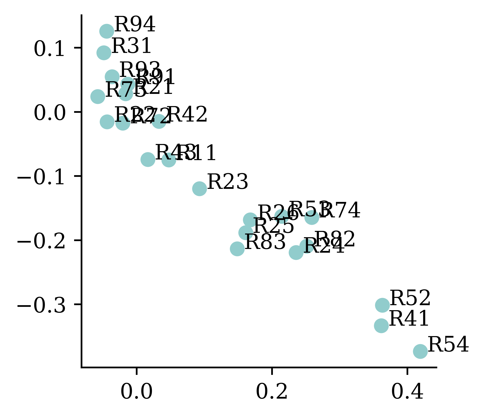
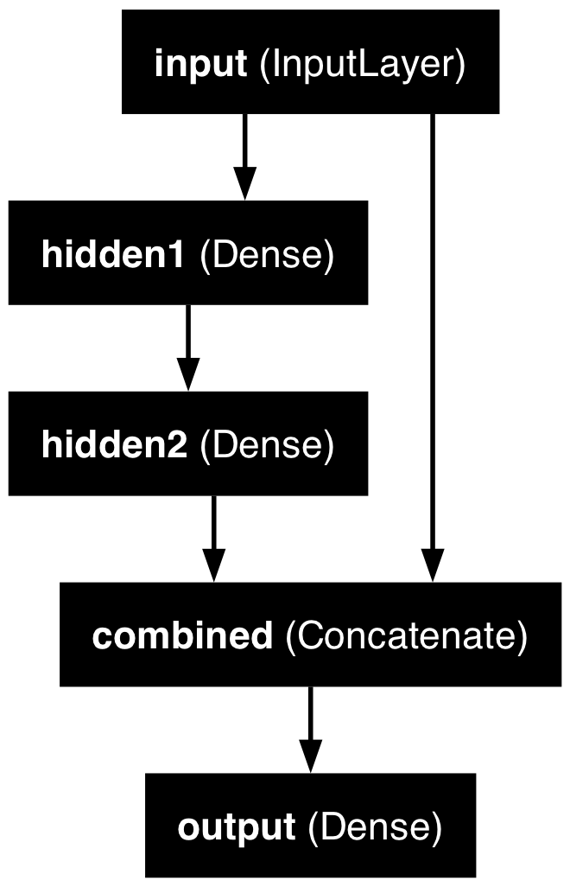
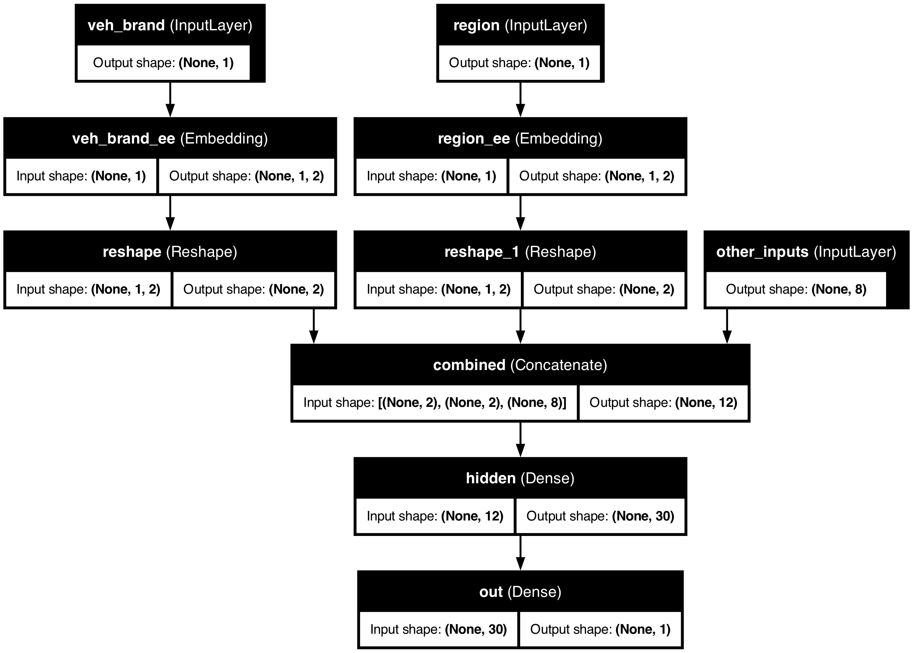

import random
from pathlib import Path
import matplotlib.pyplot as plt
import numpy as np
import pandas as pd
from keras.models import Sequential, Model
from keras.layers import Dense, Input, Embedding, Reshape, Concatenate
from keras.callbacks import EarlyStopping
from keras.utils import plot_model
from sklearn import set_config
from sklearn.datasets import fetch_openml
from sklearn.model_selection import train_test_split
from sklearn.preprocessing import OneHotEncoder, OrdinalEncoder, StandardScaler
from sklearn.compose import make_column_transformer
set_config(transform_output="pandas")Entity Embedding
ACTL3143 & ACTL5111 Deep Learning for Actuaries
Entity Embedding
Entity embedding is a new way of handling categorical variables.
Each category used to be a column
When we preprocessed categorical variables, one-hot encoding gave a column for every category, so you could always read off what each number meant:
| Category | One-hot vector |
|---|---|
R11 |
[\,1,\, 0,\, 0,\, \ldots,\, 0\,] |
R24 |
[\,0,\, 1,\, 0,\, \ldots,\, 0\,] |
R93 |
[\,0,\, 0,\, \ldots,\, 1,\, 0\,] |
Each column means one specific category, but the vector is sparse (mostly zeros) and long (one entry per category), and every category sits the same distance from every other.
With 22 French regions that is already a 22-column block; for a variable like postcode or occupation it could be thousands of columns. And because the one-hot vectors are all orthogonal, the encoding treats R11 as exactly as different from its neighbour R24 as it is from a region on the opposite side of the country — it knows nothing about which regions are alike.
Entity embeddings: short, dense & learned
An entity embedding (Guo & Berkhahn, 2016) replaces that sparse column-per-category block with a short, dense vector that the network learns during training:
\text{R11} \;\longrightarrow\; [\,0.07,\; -0.42\,], \qquad \text{R24} \;\longrightarrow\; [\,0.11,\; -0.39\,]
- the vector is short — e.g. 2 numbers instead of 22 columns;
- the dimensions are learned, not categories — there is no “
R11column”; - categories with a similar effect on the target tend to cluster together.
This is particularly useful when the categorical variable can take on a large number of different levels (it has high cardinality). Though, in that situation, rare levels are fit from very little data, so they may not be placed optimally.
Just like word embeddings, the meaning is not in any single axis — you cannot say what dimension 1 “means”. What is meaningful is the geometry: regions that behave similarly for the prediction task drift close together during training. The encoding goes from sparse-and-interpretable to dense-and-learned, exactly the shift we saw moving from bag-of-words to word embeddings.
The shift to land: one-hot is a fixed, hand-specified, orthogonal encoding; an entity embedding is a learned lookup table that places each category in a continuous space, so the model can express that some categories are alike.
It’s the same idea as word embeddings
You have already met this idea in the previous lecture, just under a different name.
- A word embedding is just an entity embedding where the “entity” is a word.
- Entity embedding applies the same trick to any categorical variable: region, vehicle brand, occupation, postcode, …
- Typically word embeddings are pre-trained on huge text corpora — i.e. it is a transfer learning technique — though here we have labels so learn the embeddings as part of the supervised task.
They are both, in essence, a lookup table of learned vectors.
The French Motor Dataset
Imports needed for these demos
Revisit the French motor dataset
Code
if not Path("data/freq_data.csv").exists():
freq = fetch_openml(data_id=41214, as_frame=True).frame
freq.to_csv("data/freq_data.csv", index=False)
else:
freq = pd.read_csv("data/freq_data.csv")
freq| IDpol | ClaimNb | Exposure | Area | VehPower | VehAge | DrivAge | BonusMalus | VehBrand | VehGas | Density | Region | |
|---|---|---|---|---|---|---|---|---|---|---|---|---|
| 0 | 1.0 | 1.0 | 0.10000 | D | 5.0 | 0.0 | 55.0 | 50.0 | B12 | Regular | 1217.0 | R82 |
| 1 | 3.0 | 1.0 | 0.77000 | D | 5.0 | 0.0 | 55.0 | 50.0 | B12 | Regular | 1217.0 | R82 |
| ... | ... | ... | ... | ... | ... | ... | ... | ... | ... | ... | ... | ... |
| 678011 | 6114329.0 | 0.0 | 0.00274 | B | 4.0 | 0.0 | 60.0 | 50.0 | B12 | Regular | 95.0 | R26 |
| 678012 | 6114330.0 | 0.0 | 0.00274 | B | 7.0 | 6.0 | 29.0 | 54.0 | B12 | Diesel | 65.0 | R72 |
678013 rows × 12 columns
Data dictionary
| Variable | Description | Preprocessing |
|---|---|---|
IDpol |
Policy number (unique identifier) | Dropped |
ClaimNb |
Number of claims on the given policy | Target |
Exposure* |
Total exposure in yearly units | Normalised |
Area |
Area code (ordinal) | Ordinal Encode |
VehPower |
Power of the car (ordinal encoded) | Normalised |
VehAge |
Age of the car in years | Normalised |
DrivAge |
Age of the (most common) driver in years | Normalised |
BonusMalus |
Bonus–malus level between 50 and 230 (with reference level 100) | Normalised |
VehBrand* |
Car brand (nominal) | One-hot |
VehGas |
Diesel or regular fuel car (binary) | One-hot |
Density |
Density of inhabitants per km2 in the city of the living place of the driver | Normalised |
Region* |
Regions in France (prior to 2016) | One-hot |
* The three variables we single out later: Region & VehBrand get embeddings, and Exposure becomes an offset.
The model
Have \{ (\mathbf{x}_i, y_i) \}_{i=1, \dots, n} for \mathbf{x}_i \in \mathbb{R}^{47} and y_i \in \mathbb{N}_0.
Assume the distribution Y_i \sim \mathsf{Poisson}(\lambda(\mathbf{x}_i))
We have \mathbb{E} Y_i = \lambda(\mathbf{x}_i). The NN takes \mathbf{x}_i & predicts \mathbb{E} Y_i.
Note
For insurance, this is a bit weird. The exposures are different for each policy.
\lambda(\mathbf{x}_i) is the expected number of claims for the duration of policy i’s contract.
Normally, \text{Exposure}_i \not\in \mathbf{x}_i, and \lambda(\mathbf{x}_i) is the expected rate per year, then Y_i \sim \mathsf{Poisson}(\text{Exposure}_i \times \lambda(\mathbf{x}_i)).
What values do we see in the data?
Code
freq = freq.drop("IDpol", axis=1).head(25_000)
X_train, X_test, y_train, y_test = train_test_split(
freq.drop("ClaimNb", axis=1), freq["ClaimNb"], random_state=36861)
# Reset each index to start at 0 again.
X_train_raw = X_train.reset_index(drop=True)
X_test_raw = X_test.reset_index(drop=True)X_train_raw["Area"].value_counts()
X_train_raw["VehBrand"].value_counts()
X_train_raw["VehGas"].value_counts()
X_train_raw["Region"].value_counts()Area
C 5514
D 4116
...
B 2387
F 444
Name: count, Length: 6, dtype: int64VehBrand
B1 4998
B2 4906
...
B11 283
B14 140
Name: count, Length: 11, dtype: int64VehGas
Regular 10658
Diesel 8092
Name: count, dtype: int64Region
R24 6493
R82 2112
...
R42 48
R43 26
Name: count, Length: 22, dtype: int64How we preprocessed last time
As a reminder, last time we preprocessed the categorical data through one-hot encoding/dummy encoding.
ct = make_column_transformer(
(OneHotEncoder(sparse_output=False, drop="first"), ["VehGas", "VehBrand", "Region"]),
(OrdinalEncoder(), ["Area"]),
remainder=StandardScaler(),
verbose_feature_names_out=False
)
X_train = ct.fit_transform(X_train_raw)X_train_raw.head(3)| Exposure | Area | VehPower | VehAge | DrivAge | BonusMalus | VehBrand | VehGas | Density | Region | |
|---|---|---|---|---|---|---|---|---|---|---|
| 0 | 1.00 | A | 7.0 | 8.0 | 50.0 | 52.0 | B2 | Diesel | 13.0 | R24 |
| 1 | 0.79 | B | 7.0 | 7.0 | 28.0 | 80.0 | B12 | Diesel | 65.0 | R21 |
| 2 | 1.00 | C | 6.0 | 13.0 | 30.0 | 50.0 | B1 | Regular | 133.0 | R53 |
X_train.head(3)| VehGas_Regular | VehBrand_B10 | VehBrand_B11 | VehBrand_B12 | VehBrand_B13 | VehBrand_B14 | VehBrand_B2 | VehBrand_B3 | VehBrand_B4 | VehBrand_B5 | ... | Region_R91 | Region_R93 | Region_R94 | Area | Exposure | VehPower | VehAge | DrivAge | BonusMalus | Density | |
|---|---|---|---|---|---|---|---|---|---|---|---|---|---|---|---|---|---|---|---|---|---|
| 0 | 0.0 | 0.0 | 0.0 | 0.0 | 0.0 | 0.0 | 1.0 | 0.0 | 0.0 | 0.0 | ... | 0.0 | 0.0 | 0.0 | 0.0 | 1.129272 | 0.366510 | 0.223226 | 0.374405 | -0.524020 | -0.394690 |
| 1 | 0.0 | 0.0 | 0.0 | 1.0 | 0.0 | 0.0 | 0.0 | 0.0 | 0.0 | 0.0 | ... | 0.0 | 0.0 | 0.0 | 1.0 | 0.566087 | 0.366510 | 0.046100 | -1.131699 | 1.122382 | -0.381092 |
| 2 | 1.0 | 0.0 | 0.0 | 0.0 | 0.0 | 0.0 | 0.0 | 0.0 | 0.0 | 0.0 | ... | 0.0 | 0.0 | 0.0 | 2.0 | 1.129272 | -0.167408 | 1.108854 | -0.994781 | -0.641620 | -0.363309 |
3 rows × 39 columns
From One-Hot Encoding to Embeddings
Region column

{kind=link}
One-hot encoding
One hot encoding is a way to assign numerical values to nominal variables. One hot encoding is different from ordinal encoding in the way in which it transforms the data. Ordinal encoding assigns a numerical integer to each unique category of the data column and returns one integer column. In contrast, one hot encoding returns a binary vector for each unique category. As a result, what we get from one hot encoding is not a single column vector, but a matrix with number of columns equal to the number of unique categories in that nominal data column.
oh = OneHotEncoder(sparse_output=False)
X_train_oh = oh.fit_transform(X_train_raw[["Region"]])
X_test_oh = oh.transform(X_test_raw[["Region"]])
print(list(X_train_raw["Region"][:5]))
X_train_oh.head()['R24', 'R21', 'R53', 'R24', 'R82']| Region_R11 | Region_R21 | Region_R22 | Region_R23 | Region_R24 | Region_R25 | Region_R26 | Region_R31 | Region_R41 | Region_R42 | ... | Region_R53 | Region_R54 | Region_R72 | Region_R73 | Region_R74 | Region_R82 | Region_R83 | Region_R91 | Region_R93 | Region_R94 | |
|---|---|---|---|---|---|---|---|---|---|---|---|---|---|---|---|---|---|---|---|---|---|
| 0 | 0.0 | 0.0 | 0.0 | 0.0 | 1.0 | 0.0 | 0.0 | 0.0 | 0.0 | 0.0 | ... | 0.0 | 0.0 | 0.0 | 0.0 | 0.0 | 0.0 | 0.0 | 0.0 | 0.0 | 0.0 |
| 1 | 0.0 | 1.0 | 0.0 | 0.0 | 0.0 | 0.0 | 0.0 | 0.0 | 0.0 | 0.0 | ... | 0.0 | 0.0 | 0.0 | 0.0 | 0.0 | 0.0 | 0.0 | 0.0 | 0.0 | 0.0 |
| ... | ... | ... | ... | ... | ... | ... | ... | ... | ... | ... | ... | ... | ... | ... | ... | ... | ... | ... | ... | ... | ... |
| 3 | 0.0 | 0.0 | 0.0 | 0.0 | 1.0 | 0.0 | 0.0 | 0.0 | 0.0 | 0.0 | ... | 0.0 | 0.0 | 0.0 | 0.0 | 0.0 | 0.0 | 0.0 | 0.0 | 0.0 | 0.0 |
| 4 | 0.0 | 0.0 | 0.0 | 0.0 | 0.0 | 0.0 | 0.0 | 0.0 | 0.0 | 0.0 | ... | 0.0 | 0.0 | 0.0 | 0.0 | 0.0 | 1.0 | 0.0 | 0.0 | 0.0 | 0.0 |
5 rows × 22 columns
Train on one-hot inputs
For the sake of explaining entity embeddings, we will train a neural network on just one categorical variable which is one-hot encoded.
1num_regions = len(oh.categories_[0])
random.seed(12)
2model = Sequential([
Input(shape=(num_regions,)),
Dense(2),
Dense(1, activation="exponential")
])
3model.compile(optimizer="adam", loss="poisson")
es = EarlyStopping(verbose=True)
hist = model.fit(X_train_oh, y_train, epochs=100, verbose=0, validation_split=0.2, callbacks=[es])
hist.history["val_loss"][-1]- 1
-
Computes the number of unique categories in the encoded column and store it in
num_regions - 2
-
Constructs the neural network. This time, it is a neural network with 1 hidden layer and 1 output layer. The
Input(shape=(num_regions,))tells the model to expect an input matrix with columns =num_regions, andDense(2)transforms it down to an output with 2 neurons - 3
- Steps 3-6 are similar to what we saw during training with ordinal encoded variables
Epoch 6: early stopping0.7679625153541565Make a fake batch of data
Make a fake batch of data where one observation is from each region (essentially an identity matrix). We use this fake batch of data to see what the hidden layer’s activation looks like under each of the 22 categories.
X = np.eye(num_regions)
pd.DataFrame(X, columns=oh.categories_[0])| R11 | R21 | R22 | R23 | R24 | R25 | R26 | R31 | R41 | R42 | ... | R53 | R54 | R72 | R73 | R74 | R82 | R83 | R91 | R93 | R94 | |
|---|---|---|---|---|---|---|---|---|---|---|---|---|---|---|---|---|---|---|---|---|---|
| 0 | 1.0 | 0.0 | 0.0 | 0.0 | 0.0 | 0.0 | 0.0 | 0.0 | 0.0 | 0.0 | ... | 0.0 | 0.0 | 0.0 | 0.0 | 0.0 | 0.0 | 0.0 | 0.0 | 0.0 | 0.0 |
| 1 | 0.0 | 1.0 | 0.0 | 0.0 | 0.0 | 0.0 | 0.0 | 0.0 | 0.0 | 0.0 | ... | 0.0 | 0.0 | 0.0 | 0.0 | 0.0 | 0.0 | 0.0 | 0.0 | 0.0 | 0.0 |
| ... | ... | ... | ... | ... | ... | ... | ... | ... | ... | ... | ... | ... | ... | ... | ... | ... | ... | ... | ... | ... | ... |
| 20 | 0.0 | 0.0 | 0.0 | 0.0 | 0.0 | 0.0 | 0.0 | 0.0 | 0.0 | 0.0 | ... | 0.0 | 0.0 | 0.0 | 0.0 | 0.0 | 0.0 | 0.0 | 0.0 | 1.0 | 0.0 |
| 21 | 0.0 | 0.0 | 0.0 | 0.0 | 0.0 | 0.0 | 0.0 | 0.0 | 0.0 | 0.0 | ... | 0.0 | 0.0 | 0.0 | 0.0 | 0.0 | 0.0 | 0.0 | 0.0 | 0.0 | 1.0 |
22 rows × 22 columns
model.layers[0](X)tensor([[-0.0646, -0.2346],
[ 0.1463, -0.0323],
[-0.3050, -0.2913],
[ 0.0257, -0.3189],
[ 0.3848, -0.2778],
[ 0.0983, -0.4137],
[ 0.2235, -0.2502],
[ 0.1192, 0.3202],
[ 0.6295, -0.4385],
[ 0.2008, -0.0306],
[-0.2030, -0.3797],
[ 0.7612, -0.2256],
[ 0.5068, -0.0436],
[ 0.7867, -0.4326],
[-0.2026, -0.1788],
[-0.2430, -0.0941],
[ 0.8046, 0.0903],
[ 0.5057, -0.1617],
[-0.0351, -0.6517],
[ 0.0987, 0.2080],
[ 0.0298, 0.1496],
[ 0.3290, 0.4958]], grad_fn=<AddBackward0>)We see above the values of the 2 neurons in the hidden layer for each region as input.
The first layer
We can also extract the layer, get its weights and compute manually.
- 1
- Extracts the layer
- 2
- Gets the weights and biases and stores the weights in W and biases in b
- 3
- Returns the shapes of the matrices
((22, 22), (22, 2), (2,))X @ W + barray([[-0.06, -0.23],
[ 0.15, -0.03],
[-0.3 , -0.29],
[ 0.03, -0.32],
[ 0.38, -0.28],
[ 0.1 , -0.41],
[ 0.22, -0.25],
[ 0.12, 0.32],
[ 0.63, -0.44],
[ 0.2 , -0.03],
[-0.2 , -0.38],
[ 0.76, -0.23],
[ 0.51, -0.04],
[ 0.79, -0.43],
[-0.2 , -0.18],
[-0.24, -0.09],
[ 0.8 , 0.09],
[ 0.51, -0.16],
[-0.04, -0.65],
[ 0.1 , 0.21],
[ 0.03, 0.15],
[ 0.33, 0.5 ]])W + barray([[-0.06, -0.23],
[ 0.15, -0.03],
[-0.3 , -0.29],
[ 0.03, -0.32],
[ 0.38, -0.28],
[ 0.1 , -0.41],
[ 0.22, -0.25],
[ 0.12, 0.32],
[ 0.63, -0.44],
[ 0.2 , -0.03],
[-0.2 , -0.38],
[ 0.76, -0.23],
[ 0.51, -0.04],
[ 0.79, -0.43],
[-0.2 , -0.18],
[-0.24, -0.09],
[ 0.8 , 0.09],
[ 0.51, -0.16],
[-0.04, -0.65],
[ 0.1 , 0.21],
[ 0.03, 0.15],
[ 0.33, 0.5 ]], dtype=float32)The above codes manually compute and return the same answers as before. Remember that our \mathbf X is the identity matrix, so any matrix multiplication with \mathbf X becomes redundant (X @ W + b == W + b). This is extremely valuable as, if your categorical variable had, say, 10,000 different category possibilities, the matrix operation becomes intensive.
Just a look-up operation
We can consider this as just a look-up operation, where each row of the matrix W+b is some vector representation of each category. For example, if we want to know how region 11 is represented, we just look at the first row of the matrix W+b.
display(list(oh.categories_[0]))['R11',
'R21',
'R22',
'R23',
'R24',
'R25',
'R26',
'R31',
'R41',
'R42',
'R43',
'R52',
'R53',
'R54',
'R72',
'R73',
'R74',
'R82',
'R83',
'R91',
'R93',
'R94']W + barray([[-0.06, -0.23],
[ 0.15, -0.03],
[-0.3 , -0.29],
[ 0.03, -0.32],
[ 0.38, -0.28],
[ 0.1 , -0.41],
[ 0.22, -0.25],
[ 0.12, 0.32],
[ 0.63, -0.44],
[ 0.2 , -0.03],
[-0.2 , -0.38],
[ 0.76, -0.23],
[ 0.51, -0.04],
[ 0.79, -0.43],
[-0.2 , -0.18],
[-0.24, -0.09],
[ 0.8 , 0.09],
[ 0.51, -0.16],
[-0.04, -0.65],
[ 0.1 , 0.21],
[ 0.03, 0.15],
[ 0.33, 0.5 ]], dtype=float32)Each category maps to one row of W + b — that row is its embedding. No matrix multiply needed.
This is what entity embedding does.
Turn the region into an index
To use the entity embedding functionality, we need to turn the categories into indices. We can use the ordinal encoder to do so.
oe = OrdinalEncoder()
X_train_reg = oe.fit_transform(X_train_raw[["Region"]])
X_test_reg = oe.transform(X_test_raw[["Region"]])
for i, reg in enumerate(oe.categories_[0][:3]):
print(f"The Region value {reg} gets turned into {i}.")The Region value R11 gets turned into 0.
The Region value R21 gets turned into 1.
The Region value R22 gets turned into 2.Use an Embedding layer
Feed this new version of the data into the NN, using an embedding layer.
num_regions = X_train_raw["Region"].nunique()
random.seed(12)
model = Sequential([
Input(shape=(1,)),
Embedding(input_dim=num_regions, output_dim=2),
Dense(1, activation="exponential")
])
model.compile(optimizer="adam", loss="poisson")es = EarlyStopping(verbose=True)
hist = model.fit(X_train_reg, y_train, epochs=100, verbose=0,
validation_split=0.2, callbacks=[es])
hist.history["val_loss"][-1]Epoch 4: early stopping0.7677991390228271model.layers[<Embedding name=embedding, built=True>, <Dense name=dense_2, built=True>]Aside: the output here is shaped (None, 1, 1), not (None, 1) — a harmless extra axis from the Embedding that we will tidy up later.
Embedding layer can learn the optimal representation for a category of a categorical variable, during training. In the above example, encoding the variable Region using ordinal encoding and passing it through an embedding layer learns the optimal representation for the region during training. Ordinal encoding followed with an embedding layer is a better alternative to one-hot encoding. It is computationally less expensive (compared to generating large matrices in one-hot encoding) particularly when the number of categories is high.
Keras’ Embedding Layer
model.layers[0].get_weights()[0]array([[ 0.05, -0.07],
[-0.02, 0.03],
[-0.04, -0.02],
[ 0.09, -0.12],
[ 0.24, -0.22],
[ 0.16, -0.19],
[ 0.17, -0.17],
[-0.05, 0.09],
[ 0.36, -0.33],
[ 0.03, -0.01],
[ 0.02, -0.07],
[ 0.36, -0.3 ],
[ 0.21, -0.16],
[ 0.42, -0.37],
[-0.02, -0.02],
[-0.06, 0.02],
[ 0.26, -0.16],
[ 0.25, -0.21],
[ 0.15, -0.21],
[-0.01, 0.04],
[-0.04, 0.05],
[-0.04, 0.13]], dtype=float32)X_train_raw["Region"].head(4)0 R24
1 R21
2 R53
3 R24
Name: Region, dtype: strX_sample = X_train_reg[:4].to_numpy()
X_samplearray([[ 4.],
[ 1.],
[12.],
[ 4.]])enc_tensor = model.layers[0](X_sample)
keras.ops.convert_to_numpy(enc_tensor).squeeze()array([[ 0.24, -0.22],
[-0.02, 0.03],
[ 0.21, -0.16],
[ 0.24, -0.22]], dtype=float32)The embedding dimension
- Entity embedding is especially useful when there is a very large number of categories (such as 1,000 or 10,000) and you want to reduce the number of columns.
- The embedding dimension is really a hyperparameter to tune (e.g. by validation loss); there is no settled formula for it.
- One heuristic is to use n^{1/4} for a variable with n categories (The TensorFlow Team, 2017), but there’s no theoretical justification, and others disagree.
- In this case, a nice side benefit is that 2-dimensional embeddings can be plotted directly.
The learned embeddings
If we only have two-dimensional embeddings we can plot them.
points = model.layers[0].get_weights()[0]
plt.figure(figsize=(3, 3))
plt.scatter(points[:,0], points[:,1])
for i in range(num_regions):
plt.text(points[i,0]+0.01, points[i,1] , s=oe.categories_[0][i])

While it is not always the case, entity embeddings can at times be meaningful instead of just being useful representations. The above figure shows how plotting the learned embeddings help reveal regions which might be similar (e.g. coastal areas, hilly areas etc.).
Embeddings improve during training

Each category is initially assigned a random vector, but they move during training. These movements follow some sort of logic, for example in this graph countries in Europe cluster together and countries in Asia cluster together.
Embeddings & other inputs
Often times, we deal with both categorical and numerical variables together. The following diagram shows a recommended way of inputting numerical and categorical data into the neural network. Numerical variables are inherently numeric and do not require entity embedding. On the other hand, categorical variables must undergo entity embedding to convert to number format.

We can’t do this with Sequential models…
Given we want numerical variables to do one thing and categorical variables to do another, they need to be preprocessed separately and independently. The outputs of these independent (non-sequential) preprocesses become inputs to the next hidden layer (now back to sequential).
Keras’ Functional API
Sequential models are easy to use and do not require many specifications, however, they cannot model complex neural network architectures. Keras Functional API approach on the other hand allows the users to build complex architectures.
Converting Sequential models
random.seed(12)
model = Sequential([
Input(shape=(X_train_oh.shape[1],)),
Dense(30, "leaky_relu"),
Dense(1, "exponential")
])
model.compile(
optimizer="adam",
loss="poisson")
hist = model.fit(
X_train_oh, y_train,
epochs=1, verbose=0,
validation_split=0.2)
hist.history["val_loss"][-1]0.7695862650871277random.seed(12)
inputs = Input(shape=(X_train_oh.shape[1],))
x = Dense(30, "leaky_relu")(inputs)
out = Dense(1, "exponential")(x)
model = Model(inputs, out)
model.compile(
optimizer="adam",
loss="poisson")
hist = model.fit(
X_train_oh, y_train,
epochs=1, verbose=0,
validation_split=0.2)
hist.history["val_loss"][-1]0.7695212364196777The above code shows how to construct the same neural network using sequential models and Keras functional API. Every sequential model can be converted into the functional style, but not every functional model can be converted to the sequential style.
In the functional API approach, we must specify the shape of the input layer, and explicitly define the inputs and outputs of a layer before specifying the model. model = Model(inputs, out) specifies the inputs and outputs of the model. This manner of specifying the inputs and outputs of the model allows the user to combine several inputs (inputs which are preprocessed in different ways) to finally build the model. One example would be combining entity embedded categorical variables, and scaled numerical variables.
Wide & Deep network

Add a skip connection from input to output layers.
inp = Input(shape=X_train.shape[1:])
hidden1 = Dense(30, "leaky_relu")(inp)
hidden2 = Dense(30, "leaky_relu")(hidden1)
concat = Concatenate()(
[inp, hidden2])
output = Dense(1)(concat)
model = Model(inputs=[inp], outputs=[output])The functional API method can unlock some new non-sequential NN architectures, such as the Wide & Deep network. One version of the inputs is processed through dense hidden layers, and the other version skips the processing. The two versions are then concatenated into a new layer which is used to create the output layer.
Naming the layers
For complex networks, it is often useful to give meaningful names to the layers.
input_ = Input(shape=X_train.shape[1:], name="input")
hidden1 = Dense(30, activation="leaky_relu", name="hidden1")(input_)
hidden2 = Dense(30, activation="leaky_relu", name="hidden2")(hidden1)
concat = Concatenate(name="combined")([input_, hidden2])
output = Dense(1, name="output")(concat)
model = Model(inputs=[input_], outputs=[output])Inspecting a complex model
plot_model(model, show_layer_names=True)
model.summary(line_length=60)Model: "functional_5"
┏━━━━━━━━━━━━━━━━━┳━━━━━━━━━━━━━━┳━━━━━━━━━┳━━━━━━━━━━━━━━━┓ ┃ Layer (type) ┃ Output Shape ┃ Param # ┃ Connected to ┃ ┡━━━━━━━━━━━━━━━━━╇━━━━━━━━━━━━━━╇━━━━━━━━━╇━━━━━━━━━━━━━━━┩ │ input │ (None, 39) │ 0 │ - │ │ (InputLayer) │ │ │ │ ├─────────────────┼──────────────┼─────────┼───────────────┤ │ hidden1 (Dense) │ (None, 30) │ 1,200 │ input[0][0] │ ├─────────────────┼──────────────┼─────────┼───────────────┤ │ hidden2 (Dense) │ (None, 30) │ 930 │ hidden1[0][0] │ ├─────────────────┼──────────────┼─────────┼───────────────┤ │ combined │ (None, 69) │ 0 │ input[0][0], │ │ (Concatenate) │ │ │ hidden2[0][0] │ ├─────────────────┼──────────────┼─────────┼───────────────┤ │ output (Dense) │ (None, 1) │ 70 │ combined[0][… │ └─────────────────┴──────────────┴─────────┴───────────────┘
Total params: 2,200 (8.59 KB)
Trainable params: 2,200 (8.59 KB)
Non-trainable params: 0 (0.00 B)
The plot of the model becomes much easier to understand and interpret.
French Motor Dataset with Embeddings
The desired architecture
Preprocess all French motor inputs
Transform the categorical variables to integers:
1num_brands, num_regions = X_train_raw[["VehBrand", "Region"]].nunique()
ct = make_column_transformer(
2 (OrdinalEncoder(), ["VehBrand", "Region", "Area", "VehGas"]),
3 remainder=StandardScaler(),
4 verbose_feature_names_out=False
)
5X_train = ct.fit_transform(X_train_raw)
6X_test = ct.transform(X_test_raw)- 1
- Stores separately the number of unique categories in the nominal variables, as we will need these values later for entity embedding
- 2
- Contructs columns transformer by first ordinally encoding all categorical variables (ordinal and nominal). Nominal variables are ordinal encoded here just as an intermediate step before this is the required input format for entity embedding layers
- 3
- Applies standard scaling to all other numerical variables
- 4
- Choose the simpler style of column names for the transformed dataframes
- 5
- Fits the column transformer to the train set and transforms it
- 6
- Transforms the test set using the column transformer fitted using the train set
Split the brand and region data apart from the rest:
X_train_brand = X_train["VehBrand"]
X_train_region = X_train["Region"]
X_train_rest = X_train.drop(["VehBrand", "Region"], axis=1)
X_test_brand = X_test["VehBrand"]
X_test_region = X_test["Region"]
X_test_rest = X_test.drop(["VehBrand", "Region"], axis=1)Organise the inputs
Make a Keras Input for: vehicle brand, region, & others.
veh_brand = Input(shape=(1,), name="veh_brand")
region = Input(shape=(1,), name="region")
other_inputs = Input(shape=X_train_rest.shape[1:], name="other_inputs")Create embeddings and join them with the other inputs.
random.seed(1337)
1veh_brand_ee = Embedding(input_dim=num_brands, output_dim=2,
name="veh_brand_ee")(veh_brand)
2veh_brand_ee = Reshape(target_shape=(2,))(veh_brand_ee)
3region_ee = Embedding(input_dim=num_regions, output_dim=2, name="region_ee")(region)
4region_ee = Reshape(target_shape=(2,))(region_ee)
5x = Concatenate(name="combined")([veh_brand_ee, region_ee, other_inputs])- 1
- Constructs the embedding layer by specifying the input dimension (the number of unique categories) and output dimension (the number of dimensions we want the input to be summarised in to)
- 2
- Reshapes the output to match the format required at the model building step
- 3
- Constructs the embedding layer by specifying the input dimension (the number of unique categories) and output dimension
- 4
- Reshapes the output to match the format required at the model building step
- 5
- Combines the entity embedded matrices and other inputs together
Complete the model and fit it
Feed the combined embeddings & continuous inputs to some normal dense layers.
x = Dense(30, "relu", name="hidden")(x)
out = Dense(1, "exponential", name="out")(x)
1model = Model([veh_brand, region, other_inputs], out)
model.compile(optimizer="adam", loss="poisson")
2hist = model.fit((X_train_brand, X_train_region, X_train_rest),
y_train, epochs=100, verbose=0,
callbacks=[EarlyStopping(patience=5)], validation_split=0.2)
np.min(hist.history["val_loss"])- 1
- Model building stage requires all inputs to be passed in together
- 2
- Passes in the three sets of data, since the format defined at the model building stage requires 3 data sets
np.float64(0.6855398416519165)Plotting this model
plot_model(model, show_layer_names=True)
Why we need to reshape
plot_model(model, show_layer_names=True, show_shapes=True)
The plotted model shows how, for example, region starts off as a matrix with (None,1) shape. This indicates that region was a column matrix with some number of rows. Entity embedding the region variable resulted in a 3D array of shape ((None,1,2)) which is not the required format for concatenating. Therefore, we reshape it using the Reshape function. This results in column array of shape, (None,2) which is what we need for concatenating.
Scale by Exposure
Two different models
Have \{ (\mathbf{x}_i, y_i) \}_{i=1, \dots, n} for \mathbf{x}_i \in \mathbb{R}^{47} and y_i \in \mathbb{N}_0.
Model 1: Say Y_i \sim \mathsf{Poisson}(\lambda(\mathbf{x}_i)).
But, the exposures are different for each policy. \lambda(\mathbf{x}_i) is the expected number of claims for the duration of policy i’s contract.
Model 2: Say Y_i \sim \mathsf{Poisson}(\text{Exposure}_i \times \lambda(\mathbf{x}_i)).
Now, \text{Exposure}_i \not\in \mathbf{x}_i, and \lambda(\mathbf{x}_i) is the rate per year.
Just take continuous variables
For convenience, the following code only considers the numerical variables during this implementation.
- 1
- Starts defining the column transformer
- 2
-
Lets
Exposurepass through the neural network as it is without preprocessing - 3
- Drops the categorical variables (for the ease of implementation)
- 4
- Scales the remaining variables
- 5
- Choose the simpler style of column names for the transformed dataframes
- 6
- Fits and transforms the train set
- 7
- Only transforms the test set
Split exposure apart from the rest:
X_train_exp = X_train["Exposure"]
X_test_exp = X_test["Exposure"]
X_train_rest = X_train.drop("Exposure", axis=1)
X_test_rest = X_test.drop("Exposure", axis=1)Organise the inputs:
exposure = Input(shape=(1,), name="exposure")
other_inputs = Input(shape=X_train_rest.shape[1:], name="other_inputs")Make & fit the model
Feed the continuous inputs to some normal dense layers.
random.seed(1337)
x = Dense(30, "relu", name="hidden1")(other_inputs)
x = Dense(30, "relu", name="hidden2")(x)
lambda_ = Dense(1, "exponential", name="lambda")(x)out = lambda_ * exposure
model = Model([exposure, other_inputs], out)
model.compile(optimizer="adam", loss="poisson")
es = EarlyStopping(patience=10, restore_best_weights=True, verbose=1)
hist = model.fit((X_train_exp, X_train_rest), y_train, epochs=100, verbose=0,
callbacks=[es], validation_split=0.2)
np.min(hist.history["val_loss"])Epoch 29: early stopping
Restoring model weights from the end of the best epoch: 19.np.float64(0.9100556373596191)Plot the model
plot_model(model, show_layer_names=True)
Further reading
Avanzi et al. (2024) focus on how to handle the case of high-cardinality categorical features, and propose a new architecture specifically tailored for actuarial purposes.
References
Avanzi, B., Taylor, G., Wang, M., & Wong, B. (2024). Machine learning with high-cardinality categorical features in actuarial applications. ASTIN Bulletin: The Journal of the IAA, 54(2), 213–238. https://doi.org/10.1017/asb.2024.7
Guo, C., & Berkhahn, F. (2016). Entity embeddings of categorical variables. arXiv Preprint arXiv:1604.06737.
Noll, A., Salzmann, R., & Wüthrich, M. V. (2020). Case study: French motor third-party liability claims. SSRN Manuscript 3164764.
The TensorFlow Team. (2017). Introducing TensorFlow feature columns. Google Developers Blog. https://developers.googleblog.com/introducing-tensorflow-feature-columns/
Package Versions
from watermark import watermark
print(watermark(python=True, packages="keras,matplotlib,numpy,pandas,seaborn,scipy,torch"))Python implementation: CPython
Python version : 3.14.5
IPython version : 9.13.0
keras : 3.14.1
matplotlib: 3.10.9
numpy : 2.4.4
pandas : 3.0.2
seaborn : 0.13.2
scipy : 1.17.1
torch : 2.11.0
Glossary
- entity embeddings
- Input layer
- Keras functional API
- Reshape layer
- skip connection
- wide & deep network